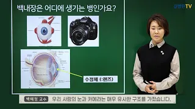
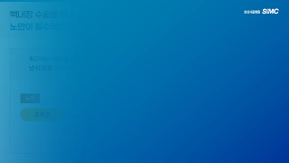

- HOME
- 백내장
백내장
-
선천성백내장
- 태어날 때부터 수정체에 혼탁을 갖고 태어나는 경우를 말합니다. 대부분이 원인불명이거나 선천성 소인에 의한 유전성인 경우와 체내 감염 및 신진대사 이상에 의한 경우 등입니다.
-
검사방법 : 기능검사(혈액채취), 초음파검사, 동위원소 촬영등
치료방법 : 약물치료, 수술치료
- 코멘트
-
- 선천성 백내장의 경우에는 백내장의 정도가 시력장애를 초래할 정도인지 아닌지를 판단하여 수술 여부를 결정짓는 것이 무엇보다도 중요합니다.
-
노인성백내장
- 나이가 들면서 투명했던 수정체가 서서히 혼탁해지는 것을 말합니다
-
검사방법 : 기능검사, 안구 촬영등
치료방법 : 약물치료, 수술치료
- 코멘트
-
- 노인성 백내장은 안구 내의 망막이나 초자체에 이상이 없는 경우에는 정상시력에 가까운 시력으로의 회복이 가능합니다. 노인성 백내장의 경우에는 개인차에 따라 몇 개월 이내에 백내장이 성숙되는 경우도 있고, 수년간에 걸쳐 백내장이 초기 상태로 지속되는 경우도 있으므로 주기적으로 안과 검진을 받는 것이 좋습니다
-
외상성백내장
- 외상으로 수정체가 파열되었거나 타박상으로 인하여 수정체 혼탁이 오는 경우르 말합니다.
-
검사방법 : 기능검사
치료방법 : 수술치료, 약물치료
- 증상
-
- 눈의 좌상 후 수개월이 지나면서 수정체낭의 후낭하에 혼탁이 초래되어 시력이 감퇴되는 질환입니다. 안구에 심한 타박상을 입은 경우에 수정체낭이 파열되면 빠르게 수정체 전체에 혼탁이 오며, 수정체 단백질이 전방 내로 유출되어 염증을 초래하고 안압을 상승시키기도 합니다.
- HOME
- 백내장
백내장수술법
"백내장,해오름과 함께라면 두려울 것 없습니다."
-
눈 비교

백내장을 앓고있는 눈 상태 정상적인 눈 상태 -
수술법 비교
일반 백내장 수술 1.주사마취통증이 심하다. 2.눈의 반 이상을 절개출혈이 심하다. 3.출혈이 심하다회복기간이 길다. 4.수술 후 실로봉합난시가 발생한다.초음파유화흡입술 1.점안마취 통증이 없다. 2.'1.2~1.3mm'정도의 구멍만 냄출혈이 없다. 3.출혈이 없다.회복기간이 짧다. 4.수술 후 봉합이 필요없다. 난시 치료까지 가능
-
백내장 관련자료

"백내장은 이렇게 생겨요."

"백내장 수술에 관하여."